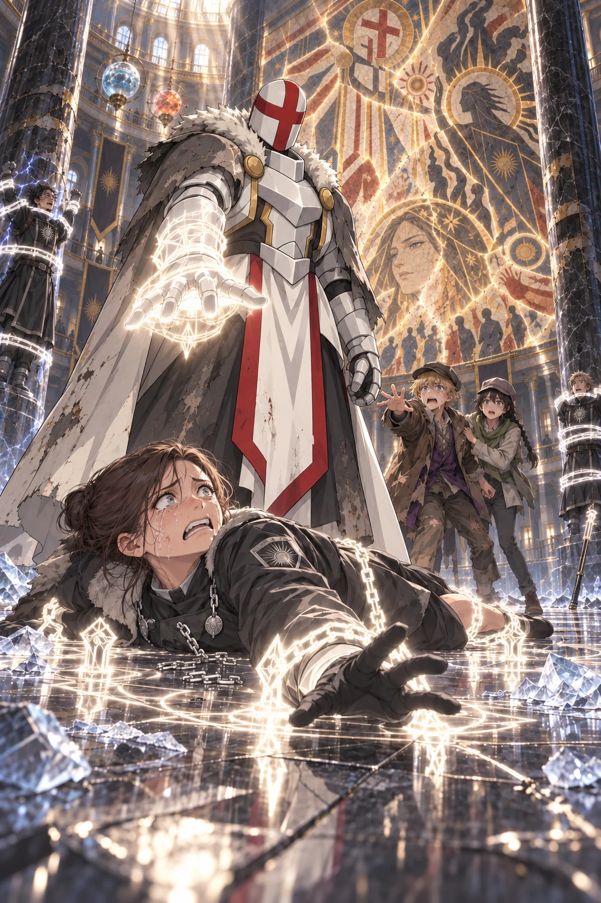

Volume One · Chapter Five
The Face Beneath the Lie
“We should go,” Orin whispered, but Ultimos remained before the mural, studying the painted gate.
Three security mages entered the rotunda through the eastern doors.
They wore the black coats and short silver chains of Hall guards, not the reinforced robes of Wardens. None carried an iron-banded staff. One held the delivery ledger beneath his arm. A short black focus baton hung at his side, while another guard carried a slate covered in clay-token numbers. They stopped the first cluster of laborers coming out of the civic offices and began asking for work chits.
The broad woman leading them spoke with the tired authority of someone accustomed to settling arguments over missing papers.
“If you entered through the east delivery court this morning, have your chit ready. Everyone else keep moving.”
Orin felt the numbered token against his thigh. “They found her.”
Kisaya glanced back. The guards had not seen them yet. A clerk was explaining something at length while the guard with the slate compared his chit against the ledger.
“Then we leave before they do,” she said.
Orin touched Ultimos’s sleeve. “Now.” Ultimos did not look away from the mural.
“The western arch had already fallen,” he said.
His voice barely carried beyond them.
Kisaya looked at the civilians painted inside the white lattice.
“What?”
“Before Caedran arrived. The western arch collapsed when black fire reached the upper storehouse.”
His helmet shifted beneath the hood.
“There were no soldiers behind us.”
Orin followed his gaze.
Beside the painted Ultimos stood a second white mage in pale robes and a short armored mantle. One hand touched the gate while the other extended the lines enclosing the crowd.
The painter had given her a thin, cruel smile.
The caption beneath her read only:
SERVANT OF THE GRASPING HAND.
A crack ran through her face from brow to jaw. Damp had lifted a section of plaster from one cheek. The symbol at her collar had been painted as a closed white fist.
“Fermina,” Ultimos said. There was no anger in the name, and its gentleness caught Orin unprepared.
“Who was she?” Orin asked.
Ultimos did not answer. He stepped closer to the wall.
“The eastern foundation failed first,” he said. “She held it while her sister and I—”
He broke off. Orin waited, but Ultimos continued as though the unfinished sentence had never been spoken.
“Caedran was a courier. He carried my order to open the lower road. He did not break the lattice.”
The painted archmage towered in black and gold, staff raised against the white prison.
Ultimos looked back at Fermina.
“Three hundred and twelve people crossed beneath that gate before the foundation gave way.”
Orin’s throat tightened.
Behind them, the security captain raised her voice.
“Third-floor glazing crew. Three laborers. If you are still in the hall, remain where you are.”
The nearest conversations faltered. Orin heard shoes turning on the polished floor.
“Ultimos,” he said. “They know which chit she gave us.”
“Was its number in the ledger?”
“She wrote it beside our entry before you struck her.”
Around them, shoes continued to cross the polished stone. A clerk laughed on the upper balcony while the teacher beneath the dome explained that the mural commemorated the courage of black mages who had placed themselves between helpless citizens and white tyranny.
No one lowered their voice or knew the man beneath the mural had watched that gate fall.
“Please,” Orin said. “We have to go.”
Ultimos had heard him, yet he crossed the last few paces and drew one hand from the gray sleeve. White metal caught the sunlight.
“You three,” the security captain called. “Stay where you are.”
Orin turned. The guards were a dozen paces away, and the captain extended an empty hand for the clay token.
“Work chit.”
Refusing would identify him as quickly as the number would. With all three guards watching and Ultimos still unwilling to move, Orin reached into his pocket with fingers that had gone clumsy. The token nearly slipped before he placed it in her palm, and as she checked its number against the slate, the fatigue left her face.
“The guard who issued this was found unconscious behind her desk.” Her gaze passed from Orin to Kisaya, then settled on Ultimos’s lowered hood. “You were the last crew entered in her ledger.”
“We found her that way,” Kisaya said.
The youngest guard looked at Orin more closely. Orin saw his attention catch on the pale hair escaping beneath the felt cap.
“Look at me,” the guard said, but Orin kept his face lowered.
The guard unfolded a wanted notice from inside his coat. His eyes moved from the charcoal face to Orin, then across to Kisaya.
“Captain.”
The broad woman had already recognized them. Her hand closed around the token as she said, “Take off the caps.” Neither child moved.
The three guards had entered the hall looking for laborers who had struck a coworker. Now they stood in front of two fugitives named in a civilian murder notice. For a moment, none of them seemed to know which discovery required attention first.
Then white light opened against the mural. Two armored fingers touched the crack across Fermina’s painted face, and a pattern of pale geometry no larger than Orin’s palm formed beneath them.

Fine lines entered the plaster. Ultimos laid them with slow, exact movements, each shining track ending where he placed it. One joined the split plaster. Another lifted pigment from the cruel curve of the painted mouth and carried it aside. New lines divided the colors and drew them into a different arrangement.
“Stop,” the captain said.
The word came out scarcely louder than a breath. She tried again. “You—what are you—”
The rest would not come. Awe had stripped the command from her voice. Orin recognized it from his own first sight of those pale lines. Until this moment, white magic had been history to her; now that it moved before her, she could not look away.
As the cruel smile disappeared, a different woman emerged: her broad mouth was set in concentration, one brow sat lower than the other, and tired eyes watched the civilians beneath the gate. A narrow scar crossed her chin. No buried image had waited inside the wall; Ultimos was deliberately replacing the painter’s invention with the face he had known.
Ultimos moved his fingers to the closed fist at her collar and drew three more paths through the paint. Color traveled along them in narrow streams until the fist opened and a many-rayed sun unfolded around it.
His fingers lingered over the reopened insignia.
The tracks of light remained across Fermina’s face and collar. They followed the shapes Ultimos had chosen and went no farther.
People stopped walking as the white light shone across the polished floor. Ultimos lowered his hand.
On the restoration scaffold, a woman in a brown conservator’s coat stared at the altered face. Her brush lay on the planks beside her.
“That isn’t possible,” she said, but no one answered.
The security guards stared at the illuminated tracks. The youngest had been reaching for Orin’s cap, but now he withdrew his hand as if the light had burned him.
Ultimos’s gray sleeve had fallen back from his wrist. White armor enclosed the hand against the mural. More of it showed where the work cloak had opened across his chest.
The guard with the ledger stepped backward, his heel striking the floor hard enough to echo.
All three looked up at the painted white mage towering over them. The red cross divided its featureless helmet. Then they looked beneath Ultimos’s hood.
Sunlight reached the same red line.
The captain’s hand rose. Frost appeared across her fingers, then stopped in an uneven crust.
She had expected trespassers, perhaps even thieves. Whatever training Hall security received for dangerous fugitives had not prepared her to find two of them standing beside the armored figure from a four-hundred-year-old mural.
The captain swallowed. When she spoke again, her command carried across the rotunda. “Nobody move.”
The rotunda changed around her as clerks stepped away and a teacher drew his pupils behind him. An academy student said it had to be a costume, but the words died when someone else whispered about the pillar above the southern ruins.
Ultimos turned to Orin and Kisaya. “We leave.”
The captain stepped into his path. Her face had gone pale, but she held her ground.
“You assaulted a city guard,” she said. “Those two are wanted witnesses. Stay where you are until the Wardens arrive.”
Ultimos continued toward her. The captain retreated one step before training caught up with fear, then pointed toward the exits.
“Clear the hall!” she shouted. “North stair and east court. Move.”
The wind mage beside her sent a current beneath the upper balconies, carrying the order through the rotunda. The captain swept her free hand toward the crowd and raised a wall of ice between the civilians and Ultimos. People ran, and Ultimos stepped away from their path.
At the western column, the lightning mage struck his palm against a black glass plate, igniting red lines inside it.
Ultimos extended one finger. A white spark crossed the hall and erased the plate, leaving a clean square in the stone. Before the severed channel went dark, a single red pulse escaped, raced up through the column, and entered the relay network leading to the Black Spire.
Ultimos watched it go as the last civilians spilled through the eastern doors. The teacher carried one child under his arm, and the conservator retreated with them while looking back at Fermina’s restored face until the crowd pulled her from sight.
The captain changed the angle of her hands and bent the ice wall. One end swept across the space separating Ultimos from Orin and Kisaya. The other curved behind him, climbing the mural steps in a white arc. Frost joined the floor to the columns and mural steps until he stood inside a narrowing enclosure.
The wind mage opened both hands toward Orin and Kisaya. Air closed around Orin’s chest and pulled him toward the eastern doors while his boots skidded across the polished floor. Near the curved end of the wall, Kisaya struck the ice shoulder-first. The current dragged her around it, but she caught Orin’s sleeve as she passed.
“Witnesses coming out!” the wind mage shouted.
“We came with him,” Kisaya said.
The current tightened. Pain crossed her face when it caught her injured arm.
Ultimos placed one gauntlet against the ice.
“Release them.”
The security captain came around the barrier slowly.
“Remove the hood,” she ordered. Ultimos ignored her.
“On your knees. Hands visible. The children are leaving with us.”
Orin’s body almost remembered how to obey, but Kisaya’s grip tightened around his sleeve. She had been offered a path into the crowd, away from the man who had erased three black mages beneath the ruins.
If the security mages took them, the questions would lead back to Nema’s hidden door. The disk would disappear into the same hidden custody the bearded man had died protecting.
She dug both heels into the seam between two tiles while Orin caught the base of the restoration scaffold with his free hand.
Ultimos’s voice crossed the ice. “You protected the people in this hall.”
The captain’s frost spread to her other hand. “The Conclave mages who pursued us endangered them,” Ultimos said. “I recognize the distinction. Do not attack me.”
The lightning mage at the western column went pale as he studied the fading geometry. “No elemental channel. No focus.” Whatever he believed about the resemblance, fear required no history.
“I don’t care what it is,” the captain said. “Hold him until the Wardens arrive. Get the witnesses clear.”
The wind mage pulled harder. The scaffold shifted beneath Orin’s hand, lifting one wooden wheel from the floor, and Kisaya lost the seam beneath her heels and struck him from behind.
Across the partition, pale lines entered the ice beneath Ultimos’s palm. Following the places where the captain’s spell had fixed itself to stone and iron, they released each join in turn. The enclosure dropped around him in heavy, separate slabs angled away from the children.
The captain thrust both hands forward, gathering the ice into a dense spear aimed at Ultimos’s chest.
“Last warning.”
“Do not.”
The spear launched. Ultimos moved his other hand, and the ice divided around him in two perfect halves. A point of white light traveled back toward the captain and touched her below the collarbone.
A close ward flashed over her coat. The white point stopped, divided into hair-thin lines, and ran along the ward until it found every place the protection joined her silver chain. The anchoring links sprang apart.
Before the broken links struck the floor, a white circle opened beneath her boots and released chains of light.
The first closed around her ankles and tore both feet out from under her. Two more caught her wrists before she could break the fall. She struck the polished stone on her side. The chains dragged her flat, pulled her arms wide, and fastened themselves to shining points between the floor tiles.
Frost burst from her hands, but the pale links tightened and broke every crystal apart.
“Let her go!” the lightning mage shouted as he threw both arms forward. Lightning crossed the rotunda and struck Ultimos before Orin could shut his eyes.
White armor flashed beneath the disguise. The bolt split across it, tore burning lines through the gray cloak, and shattered three tiles behind him.
Ultimos lowered his smoking arm as the lightning mage tried to gather another spell, then closed his fist.
The black focus rings around the man’s wrists sprang open. Pale bands passed through them, closed around his forearms, and wrenched both hands against the western column. His second bolt discharged into the stone above his head.
He sagged against the restraints. Orin watched until the man’s chest rose beneath his black coat and a ragged breath escaped him.
The wind current released Orin so suddenly that he fell against the scaffold. Kisaya landed beside him on one knee.
The wind mage backed toward the eastern doors and snatched up the short focus baton at his side. A black-fire messenger rose from its tip. Ultimos swept one arm outward, and a blade of light crossed the rotunda, striking the bird. It came apart before its first wingbeat. Pale lines caught the mage’s wrists and fixed the baton in the air.
The wind mage released the baton and raised both hands in surrender. White light gathered between Ultimos’s fingers, reflected in the man’s frightened eyes, then faded without being released.
“Remain,” Ultimos said.
A white spell circle opened beneath the mage’s feet. Chains of pale light snapped from its rings, caught his ankles and wrists, and yanked him back against the nearest column. He did not struggle.
Ultimos crossed the fallen slabs toward the captain while she pulled against the chains. Her shoulders lifted from the floor and struck it again. She tried to gather ice around one hand, then the other, but each attempt vanished where it touched the pale links.
Ultimos stopped over her with the false mural rising behind him. His torn gray cloak had fallen open, exposing the white armor from throat to waist. He left one hand at his side and extended the other above the captain, his palm facing her. Pale geometry opened across his gauntlet until light engulfed his hand.
The captain stared into it, and whatever authority she had forced into her voice broke apart.
“Help me!” Tears filled her eyes and she struggled violently to flee.
She twisted hard enough for the chains to cut shining lines across the floor.
The lightning mage fought his restraints. The other guard had gone rigid against his column. Neither could reach her. The hall beyond them was empty.
Orin heard another voice beneath the captain’s plea. He saw the narrow mage trapped inside his own ice armor, eyes showing through the cracks as he begged for help while Ultimos watched the prison tighten and found no error to correct.
Orin’s vision blurred. Tears ran hot across the dust on his face.
“Ultimos!”

The red cross turned toward him. The light remained gathered over the captain as she strained away from it, sobbing, her bound hands opening and closing against the floor. Ultimos looked at Orin.
For three long breaths, nothing changed.
Then his fingers closed, extinguishing the light. His other hand opened at his side and turned palm outward toward the chains. The pale links answered with a faint pulse.
He stepped over the chain across the captain’s legs, passed Orin without speaking, and walked away.
Orin wiped his face with one sleeve and followed. Kisaya came beside him, staring back at the woman on the floor.
By the time they had crossed half the rotunda, the chains were dissolving. The links around the captain’s wrists and ankles loosened, thinned into white outlines, and vanished along with the restraints holding the two men. Even after the chains released her, the captain remained on the floor with her knees drawn against her chest and both arms covering her head. Her broken silver chain clicked against the tile as she shook.
“He let me live,” she whispered through her tears, as though she did not yet believe it.
The lightning mage stumbled toward her, and neither man looked after the fugitives. Outside, people were shouting; the warning pulse had escaped.
Behind them, the mural remained unchanged except for Fermina.
Kisaya looked back at the captain.
“You were going to kill her.”
Ultimos continued walking. “She attacked me.”
“And Orin stopped you.”
Ultimos’s helmet turned slightly toward him.
“Breaking concealment was my error,” Ultimos said.
Kisaya looked up at the restored woman. “What was she to you?”
Ultimos followed her gaze. “Fermina. Someone very important to me.”
A bell rang outside, one hard note repeated by another tower nearer the Spire.
Orin thought of the hidden room beneath Nema’s home, of her reddened hands and shelves of saved medicine, and of the three broken curves passed through her family without a name.
“We can’t go back,” he said.
Ultimos faced south. Stone walls stood between the rotunda and the Ashward, but he looked through them as though distance had become another imperfect structure he might dismantle.
“No,” he said, his voice quieter than it had been during the fight. “Not now.”
Another bell answered, and the moment ended.
Ultimos crossed to Orin and pulled the request slip from his sleeve.
“The first pulse reached the Spire before I severed the channel. I imagine they will close the central roads, then the bridges. The southern districts will be searched because that is where your descriptions began. Once whoever issued the recovery order learns we entered the Survey Hall, they may assume what we were seeking. Records connected to white sites could be moved or destroyed.”
“How long?” Orin asked.
Ultimos glanced at the light moving within the western column.
“The signal crossed four relays before failure. If their command structure is competent, we have minutes.”
“How many?” Kisaya asked.
“Fewer than I intend to waste.”
He returned the paper.
“The access beneath this quarter is lost. The alarm began here; every guard below the Spire will face this direction. We go north to the waterworks, confirm that it reaches the outer wall, then follow the old passage back beneath the Spire.”
“To get out?” Kisaya asked.
“To ensure we can, before I enter the Spire.”
Ultimos led them back through the public gallery. An iron fire door had begun descending across the service stair, red containment lines brightening along both tracks.
The dusty wooden glazing template still lay where they had abandoned it. Kisaya seized the template and rammed one end beneath the door. Iron struck rotten wood, and the template bowed with a shriek as it held open a gap no higher than Orin’s knee.
“Move.”
Orin slid through first. Kisaya crawled after him, jarred her injured arm against the iron, and bit back a cry. Ultimos passed last as the template split. The door slammed behind his torn work cloak, and Warden boots reached the other side a breath later.
At the bottom of the stair, two Hall guards were helping the delivery guard back into her chair. A bruise darkened one side of her face, and she moved as though the room had not quite stopped turning. The wanted notice bearing charcoal sketches of Orin and Kisaya lay open on the desk beside her.
All three guards looked up. The injured woman’s gaze moved from the charcoal sketches to Orin’s face, then Kisaya’s, then the red cross visible beneath Ultimos’s hood.
Her hand closed around the silver chain at her collar, but a pale band fixed her wrist to the desk before she could raise it. The other guards reached for their own chains too late; Ultimos had already passed them without breaking stride.
“They’re with him!” the guard shouted.
The outer shutter was already dropping. They ran beneath it one at a time, Orin scraping his borrowed coat across the iron edge. Iron struck stone behind Ultimos as the first blows struck the fire door inside.
Orin heard the guard repeat their descriptions to the black mages. Whatever protection the word witnesses had offered was gone.
Veyr closed around them.
Blue light raced through channels beneath the streets. The public fountains stopped as water drew backward into their pipes and iron covers sealed over the basins. Wind lifts descended to the nearest platform and locked in place, while above the roofs, academy riders rose on spinning disks of air and divided into patrol lines.
At the first bridge, earth mages drove both hands down and raised stone barriers from the roadway.
People shouted as traffic stopped. Carts jammed wheel to wheel. A mother pulled her child from the crowd before a Warden could close the chain across the pedestrian path.
The same magic that had carried grain and repaired drains yesterday now divided the city into cells.

Ultimos led them into a cloth market before the bridge sealed. He understood containment even when he did not know the streets: Orin supplied names, Kisaya supplied gaps, and Ultimos turned both into movement.
They passed beneath a row of message lanterns just as black fire ignited inside them. One image appeared across every glass face: a hooded figure beneath a red cross, copied poorly from a witness’s frightened description.
SEVERE MAGICAL THREAT.
DO NOT APPROACH.
REPORT WHITE LIGHT.
Kisaya pulled her cap lower. “At least ours were flattering.” No one laughed.
The northern road vanished behind a wall of interlocked iron shutters. Ultimos looked toward the city wall beyond it.
“What stands against the inner face of that wall?” Ultimos asked. White light gathered around one hand.
“Homes,” Orin said. “And destroying it would show every Warden in Veyr exactly where we were.”
Ultimos measured the distant stone once. “Then it is not a route. We use the passage.”
They crossed a laundry roof while a checkpoint formed below and entered the northern canal district through an unfinished warehouse. When a wind-riding mage passed low overhead, Ultimos pulled them beneath a stone overhang and waited without raising a revealing barrier.
The old pumping house stood beside a canal already lowered for containment. Its wheels had stopped, and stranded fish flashed in shallow pools below. Kisaya found the runoff mouth behind a stack of rotting sluice boards, where iron bars covered it.
“Those weren’t there last summer,” she said.
Ultimos took one bar in each hand, and white light passed through the metal so faintly that Orin almost missed it.
The bars separated from the wall without a sound. Ultimos placed the intact grate beside the opening rather than throwing it into the canal.
Cold air breathed from the depths of a brick conduit barely high enough to crouch in.
Orin unfolded the copied coordinates. The paper shook between his fingers, whether from running or from the rotunda he could not tell.
“The first junction should be under the old reservoir,” he said. “Then east until the brick changes to white stone.”
“If the passage still exists,” Kisaya said.
“It exists,” Ultimos replied.
“You haven’t seen it in four centuries.”
“They built around it,” Ultimos said as he entered first.
Kisaya looked once over her shoulder toward the city. The Black Spire’s crooked crown pierced the clouds above Veyr while red signals climbed its walls like sparks spreading through a dead tree.
Then the bells began, their notes coming more slowly than the urgent peals that had followed the pillar of light: three low strokes, a pause, and one high.
The pattern rolled across Veyr from tower to tower. The sound entered the canal and trembled through the exposed stones beneath Orin’s feet.
Ultimos stopped inside the conduit so abruptly that Orin nearly walked into him.
Another sequence began with three low notes and one high.
“What does it mean?” Ultimos asked.
The last note faded beneath the arches.
“Citywide containment,” Orin said. Every school taught the cadence, though he had never heard it outside a drill. “A rogue master. A broken civic binding. A hostile artifact. Anything the district mages and Wardens can’t hold.”
Kisaya stood at the mouth of the drain, one hand pressed over the disk beneath her jacket.
The bells sounded again.
Ultimos looked back toward the Black Spire.
“They do not know what I am.”
“No,” Kisaya said. “They know what you did.”